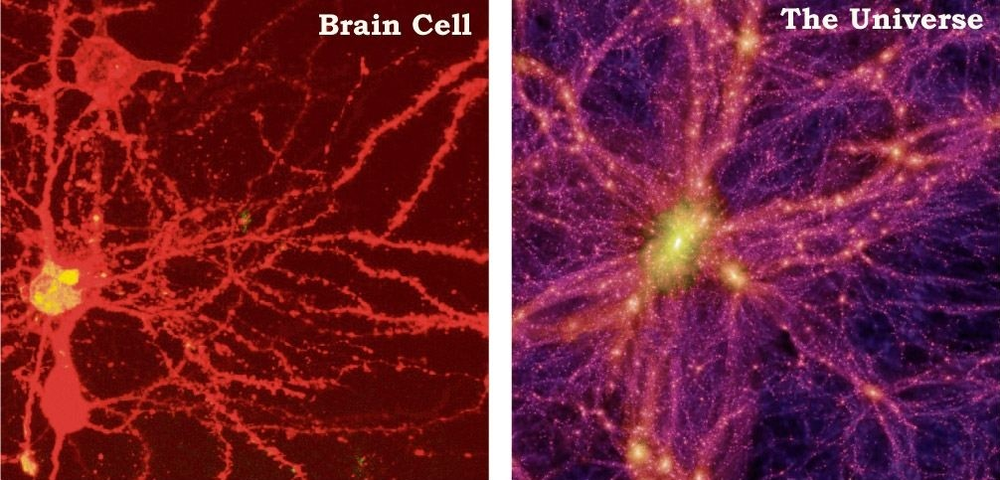

1. Universe-A gigantic Brain:

Look at the microscopic photo of few neurons and simulated rendering of universes’ structure.Aren’t they remarkably symmetrical! Wonder, do we exist inside a GIGANTIC BRAIN.The idea of the universe as a giant brain has been proposed by scientists and science fiction writers for decades. According to a study published in Nature's Scientific Reports, the universe may be growing in the same way as a giant brain. This may seem weird but we often speak of the universe being a reflection of ourselves. Imagine if we are just a part of someone’s brain or our brain is itself a universe. Maybe, maybe not, but it’s fascinating to think about.